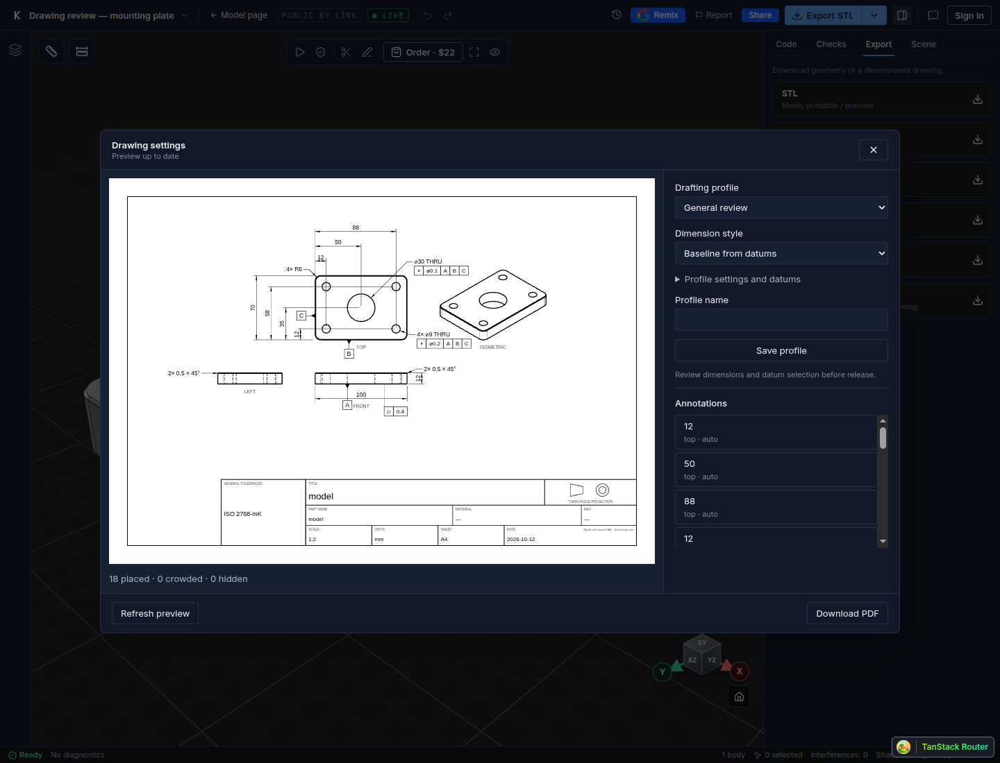
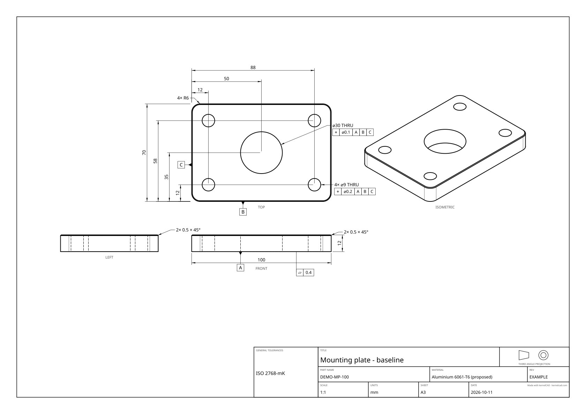
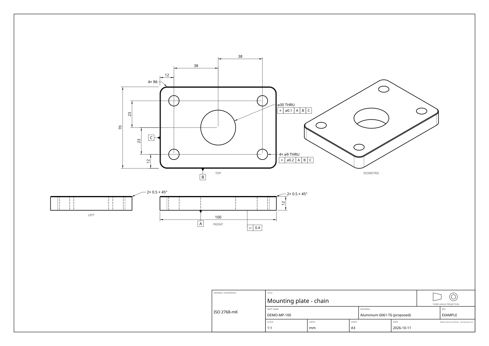
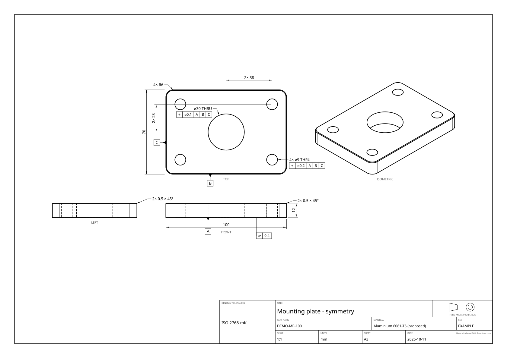
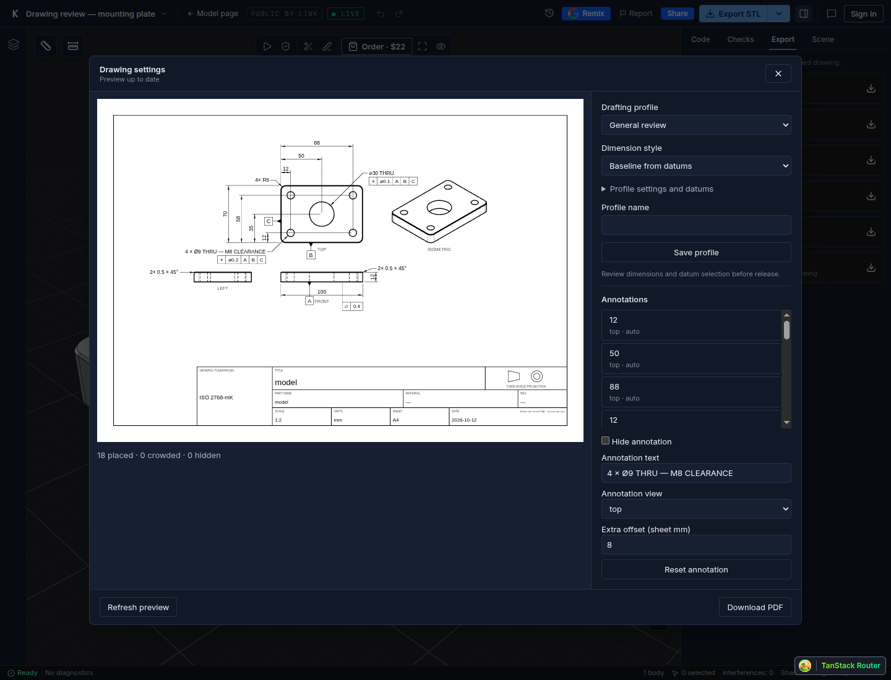

Blog · · Andrii Shylenko
Download a drawing in one click
Click Drawing (PDF) to download your drawing. Want a different layout or label? Open the optional Drawing settings.
1. Download the drawing
Open the mounting plate in Studio, or use your own part. In the right-hand Export tab, click Drawing (PDF). Your PDF downloads directly.

2. Choose a style
In Drawing settings, click Generate preview. Use Dimension style, then Refresh preview. These three drawings show the same mounting plate.



Baseline PDF · Chain PDF · Symmetry PDF
3. Tidy up a callout
Click a label in Annotations. Edit Annotation text, use Extra offset (sheet mm) to give it more room, or tick Hide annotation. Click Refresh preview to see the change.

4. Download your changes
Click Download PDF. It uses your current settings; refreshing the preview is optional.
Want the same paper size and style next time? Enter a Profile name and click Save profile.
Using an AI assistant? Ask: “Export this mounting plate as a PDF drawing with baseline dimensions.” Your assistant returns a PDF download link through MCP.
Watch the Studio walkthrough. The video and Studio screenshots show a local walkthrough. These example parts have not been manufactured or tested.